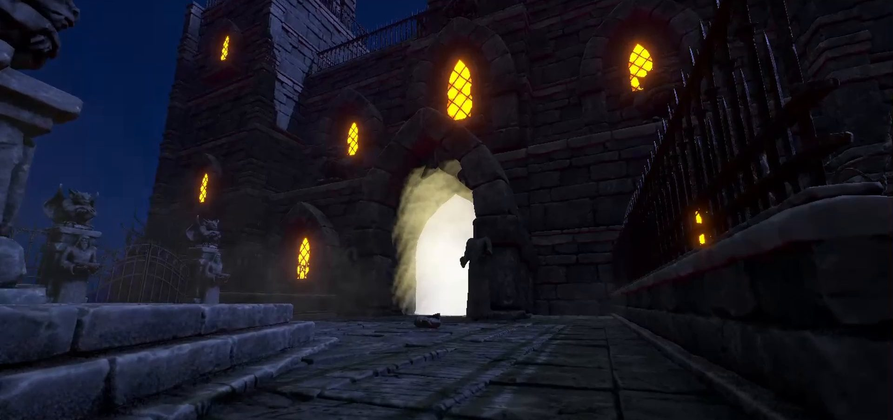
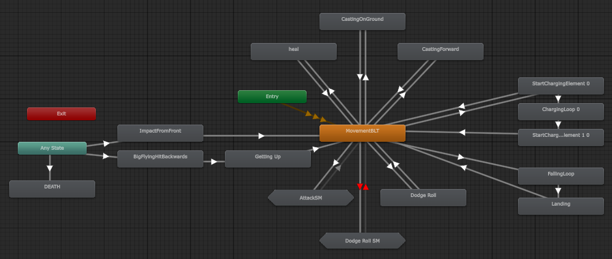
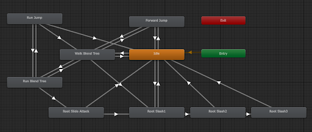

A four-week Soulslike made at Futuregames, where I was lead programmer. I built the enemy state machine used by every enemy in the game and the elemental system, implemented all of the animations and audio, and wrote the first version of the player controller.
- My role
- Lead programmer
- Team
- 4 designers, 4 programmers
- Duration
- 4 weeks
- Genre
- Soulslike
- Tech
- Unity, C#, FMOD
What I solved
- Part 1 · Enemy AI The enemy state machine The planned AI framework stalled with two weeks left, and every enemy still needed to fight.
- Part 2 · Systems The elemental system Elements had to work between enemies, the player and objects in the world.
- Part 3 · 3Cs, animation The player character The team needed a playable character with a Soulslike moveset early on.
Part 1
The enemy state machine
The problem
Every enemy and the boss needed AI that designers could shape. We started out with a GOAP framework, but it didn't come together in time, and by the start of week three we still had no enemies fighting, with two weeks to go.
What I built
At the start of week three I made the call to switch, and built a two-tiered state machine from scratch in about two and a half days. The main states decide what an enemy is doing overall. Once it's in combat, a second tier of combat states decides its next action.
- Each combat state is a component designers add to an enemy and tune in the Inspector: its weight, its cooldown and the distance range it can be used from
- Attacks are considered first, then movement, then idle, and the available state with the highest weight wins
- Enemies move with root-motion animation while the NavMesh steers them, kept in sync every frame
Result
Every enemy and the boss were built on it, each with its own mix of combat states and weights, so designers could shape how each one fights from the editor.


What designers work with: the enemy's settings, and its combat states, each with its own weight, cooldown and distance range.
float minWeight = 0f;
FsmCombatState bestState = null;
foreach (FsmCombatState state in avaliableCombatStates)
{
if (state.stateWeight > minWeight)
{
minWeight = state.stateWeight;
bestState = state;
}
}
if (bestState == null)
{
return m_combatIdleStates[0];
}
return bestState;Choosing the next action: of the combat states it can enter right now, the enemy picks the one with the highest weight. The full project is on GitHub, and there's also a cleaned-up version with the enemies in a simple test scene.
Try the combat states
Each ring is a combat state's activation range, with the values the enemies shipped with. Drag the player around the enemy, or use the slider, to see which state the FSM would pick. You can change the numbers just like a designer would in the Inspector.
Attacks are checked first unless the general attack cooldown is running, then movement, then idle. Within that pool, the state with the highest weight wins. Move away ignores its distance settings: its CanEnter is hard-coded to under 2.5 m.
Part 2
The elemental system
The problem
Elements had to interact with enemies, the player and objects in the world, and damage and health were part of the same web. Writing special cases for every pair of things that could meet would have tangled quickly.
What I built
Much of my time went into the elemental system, including the damage and health system. At its core is one big interface. Every object that takes part in the system implements it, and objects use it to recognise each other: anything that implements the interface can interact with anything else that does.
When the sword hits something, it checks whether the object implements the interface, then asks what kind of object it is to decide what happens.
Result
Enemies, the player and elemental pickups all plug into the same system, so a new kind of object only has to implement one interface to take part.
public interface IDamageableElementalSource
{
//public HitInfo GetHitInfo(HitInfo hitInfo);
public enum ElementInteractType{Enemy, Source, User}
public float ChargeElementTime();
public void TakeDamage(float damageAmount, ElementTypes.ElementType elementType, bool UsedSword);
public void Heal(float healAmount, ElementTypes.ElementType elementType);
public ElementInteractType InteractType();
public int EquippedElementAmount();
public int ElementAmountToGive();
public ElementTypes.ElementType GetSourceElement();
public void AddElement(ElementTypes.ElementType elementType, int amount, bool fromCharge);
public void RemoveElement(ElementTypes.ElementType elementType, int amount);
}The interface. Enemies, the player and elemental pickups all implement it, and InteractType() tells others which kind of object they've found.
Part 3
The player character
The problem
The team needed a playable character early, with a Soulslike moveset built on root-motion animation, so everyone else had something real to build combat and levels around.
What I built
Early on I owned the player controller. Starting from a prototype controller, I implemented the moveset we wanted, including the initial warp-motion-inspired system, and built the first version of the player prefab.
I also implemented all of Venator's animations, for the player and the enemies, along with all of its audio in FMOD.
The player character and the enemies use curves that modify the animation play speed at runtime, so we could quickly reshape the envelope of an attack animation. The same curves drive other values too, like attack momentum and jump gravity, and Venator uses even more of them. The system we use in Venator was implemented by me, then refined and built out by Linnea. You can find the first version, which was ported over to Venator, in my earlier VampSurv project.
Result
I handed the player over to another programmer, introducing them to root-motion animation and movement, so I could focus on the enemy AI and the elemental system.
Play speed across one slash
Show the curve's keyframes
| Through the swing | Play speed |
|---|---|
| 0% | 0.98× |
| 9% | 1.98× |
| 21% | 1.53× |
| 26% | 0.86× |
| 35% | 1.48× |
| 74% | 1.39× |
| 77% | 0.73× |
| 99% | 0.89× |

Player Animator controller 
Enemy Animator controller


Looking back
Venator was developed over four weeks and was overscoped from the start. Combat and game feel suffered for it, and we should have prioritized them much more. We knew we were overscoping going in, but kept going against our better judgement.
As lead programmer, I was responsible for the AI, and I should have settled on a simple state machine from the start instead of letting that decision slide in week one. When the first approach stalled, I also waited too long to change course, and switching in week three left too little time to polish how the AI and combat felt together. On top of that, I took on too much outside that role. We live and we learn, and I learned a lot from this project.